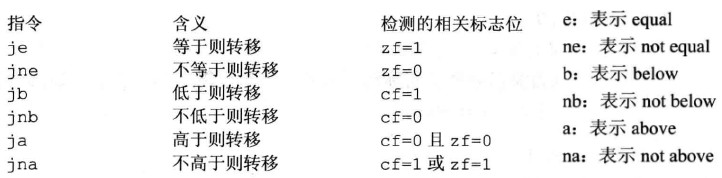

ASM
Table of Contents
ASM note.
<!– more –>
汇编语言
0 符号约定
// xxxx:yyyy 表示内存地址 2000:1000 // 表示段地址为2000 偏移地址为1000所指的内存地址 // () 表示寄存器或内存中的内容 (ax) // 表示寄存器ax中的内容 (2000:1000) // 表示内存(2000:1000)处的内容 // [...] 表示内存单元 mov bx,1000H mov ds,bx mov al,[0] // 表示将1000:0内存单元内容送入al寄存器 // idata 表示常量 mov ax,[idata] //表示把常量idata放入ax寄存器 // reg 表示一个寄存器 ax bx cx dx sp bp si di // sreg 表示一个段寄存器 ds ss cs es // SA 表示段地址segment address // EA 表示偏移地址excursion address ///////////////////////////////////////////////////// // 编译器识别处理的符号 // db 表示 define byte // dw 表示 define word // dd 表示 define double word // dup 表示 duplicate 复制，使加倍 db 3 dup (0,1,2) // db 0,1,2, 0,1,2, 0,1,2 // offset 取得标号的偏移地址 assume cs:codesg codesg segment start: mov ax,offset start ;// start是代码段中的标号，其标记的指令是代码段中的第一条指令，因此偏移地址为0 s: mov ax,offset s ;// s是代码段中的标号，其标记的指令是代码段中的第二天指令，第一条指令长度为3字节，因此s的偏移地址为3 codesg ends end start
1 基础知识
CPU 是计算机的核心部件，它控制整个计算机的运作并进行运算。要想让 CPU 工作，就必须向它提供指令和数据。指令和数据在存储器中存放，也就是我们平常所说的内存。磁盘不同于内存，磁盘上的数据或程序如果不读到内存中，就无法被 CPU 使用。
指令和数据是应用上的概念。在内存或磁盘上，指令和数据没有任何区别，都是二进制信息。
存储器被划分为若干个存储单元，每个存储单元存储 8 位（1字节）数据。
CPU 读写操作
CPU 要想进行数据读写，必须和外部器件进行下面 3 类信息的交互：
- 存储单元的地址 (地址信息)
- 器件的选择，读或写的命令 (控制信息)
- 读或写的数据 (数据信息)
CPU 通过总线和其他芯片进行数据传输。总线从逻辑上分为 3 类：
- 地址总线 CPU 通过地址总线将地址信息发出
- 控制总线 CPU 通过控制总线选中芯片，并通知其，要对其进行读或写操作
- 数据总线 CPU 和其他芯片通过数据总线互发数据
地址总线的宽度决定了 CPU 最多可寻址的范围。例如：地址总线有 10 根导线，则 CPU 可寻址 \(2^10=1024\) 个内存单元，内存的最大大小就为 1024 字节，这就构成了该 CPU 的内存地址空间。
数据总线的宽度决定了 CPU 和外界的数据传输速度。例如：数据总线有 8 根导线，则数据总线一次可传输 8 位（1字节）信息。
控制总线的宽度决定了 CPU 对外部器件的控制能力。
主板
每台计算机中，都有一个主板，主板上有核心器件和一些主要器件，这些器件通过总线相连。这些器件有 CPU、存储器、外围芯片组、扩展插槽等。扩展插槽上一般插有 RAM 内存条和各类接口卡。
接口卡
计算机系统中，所有可以用程序控制其工作的设备，必须受到 CPU 的控制。CPU 对外部设备都不能直接控制，如显示器、音响、打印机等。直接控制这些设备进行工作的是插在扩展插槽上的接口卡。扩展插槽通过总线和 CPU 相连，所以接口卡也通过总线同 CPU 相连。CPU 可以直接控制这些接口卡，从而实现对外设的间接控制。
各类存储芯片
计算机上有多个存储器芯片，这些存储器芯片从物理连接上看是独立的，不同器件。从读写属性上看分为两类：
- 随机存储器(RAM)： 可读可写，但必须带点存储，关机后内容丢失
- 只读存储器(ROM)： 只能读不可写，关机后内容不丢失。
从功能和连接上又可分为：
- 随机存储器： 用于存放 CPU 使用的绝大部分程序和数据
- 装有 BIOS（Basic Input/Output System）的 ROM：BIOS 是主板和各类接口卡厂商提供的软件系统，可通过它利用该硬件设备进行最基本的输入输出。
- 接口卡上的 RAM：例如 GPU 的显存
内存地址空间
上面描述的存储器，在物理上是独立的器件，但是在下面两点上是相同的：
- 都和 CPU 的总线相连
- CPU 对它们进行读或写的时候都通过总线发出内存读写命令
CPU 对他们进行操控时，把他们都当作内存来对待，把他们总的看作一个由若干存储单元组成的逻辑存储器。
2 寄存器
通用寄存器
8086CPU 的所有寄存器都是 16 位(2 个字节)的。AX BX CX DX 这四个寄存器通常用来存放一般性的数据，被称为通用寄存器。8086CPU 上一代 CPU 中的寄存器都是 8 位，为了保证兼容，AX BX CX DX 这四个寄存器每个都可分为两个可独立使用的 8 位寄存器来用：
AX 可分为 AH 和 AL;
BX 可分为 BH 和 BL;
CX 可分为 CH 和 CL;
DX 可分为 DH 和 DL;
下图展示了几个简单的汇编指令：
物理地址
所有内存单元构成的存储空间使一个一维线性空间，每个内存单元在空间中都有唯一的地址，该地址被称为物理地址。
CPU 通过地址总线送入存储器的必须是一个内存单元的物理地址。
16 位结构 CPU
- 运算器一次最多可以处理 16 位数据
- 寄存器的最大宽度为 16 位
- 寄存器和运算器之间的通路为 16 位
8086CPU 就是 16 位机，8080、8085 是 8 位机
物理地址合成
8086CPU 有 20 位地址总线，其在内部用两个 16 位地址合成的方法来形成一个 20 位的物理地址。
- CPU 中相关部件提供两个 16 位地址，一个称为段地址，另一个称为偏移地址
- 段地址和偏移地址通过内部总线送入一个称为地址加法器的部件
- 地址加法器将两个 16 位地址合成为一个 20 位地址
- 地址加法器通过内部总线将 20 位物理地址送入输入输出控制电路
- 输入输出控制电路将 20 位物理地址送上地址总线
- 20 位物理地址被地址总线传送到存储器
段寄存器
段是 CPU 中合成物理地址用到的概念。在编程时可以根据需要，将若干地址连续的内存单元看作一个段，用段地址*16 定位段的起始地址，用偏移地址定位段中的内存单元。
- 段地址*16 必然是 16 的倍数
- 偏移地址为 16 位，16 位地址的寻址能力为 64KB，所以一个段的长度最大为 64K
8086CPU 有 4 个段寄存器：CS DS SS ES，合成物理地址时，由他们提供段地址。
代码段、数据段、栈段 都是我们在编程时，设计的逻辑概念。
CS IP 寄存器
任意时刻，CS 中的内容为 M，IP(指令指针寄存器)中的内容为 N，CPU 将从内存 M*16+N 单元开始，读取一条指令并执行。
8086CPU 的工作过程如下：
- 从 CS:IP 指向的内存单元读取指令，读取的指令进入指令缓冲器
- IP = IP + 所读指令的长度，此时 CS*16+IP 就指向下一条指令了
- 执行指令。转到步骤 1，重复此过程
修改 CS, IP 的指令
// 同时修改cs ip寄存器 // jmp 段地址:偏移地址 jmp 2AE3:3 // 执行后cs=2AE3 ip=0003 // 只修改ip寄存器 // jmp 某寄存器, // 执行前 cs=2000 ip=0003 ax=1000 // 执行后 cs=2000 ip=1000 ax=1000 jmp ax
3 寄存器(内存访问)
DS 和[address]
DS 寄存器通常用来存放要访问数据的段地址。
// 下面的mov 指令可以将内存单元中的内容送入一个寄存器中 // mov 寄存器,[offset] // ds寄存器内容为段地址，offset为偏移地址，两者合起来标识出内存单元地址 mov bx,1000H // 将1000放入bx寄存器 mov ds,bx // 将bx寄存器内容放入ds寄存器 mov al,[0] // 将内存单元数据送入寄存器al
Tips: 8086CPU 不支持将数据直接送入段寄存器
字的传送
只要在 mov 指令中给出 16 位的寄存器就可以进行 16 位数据的传送了
mov bx,1000H mov ds,bx mov ax,[0] // 将1000:0处的字送入ax mov [0],cx // 将cx中16位数据送到1000:0
mov add sub 指令
mov 寄存器,数据
mov 寄存器,寄存器
mov 寄存器,段寄存器
mov 寄存器,内存单元
mov 内存单元,寄存器
mov 内存单元,段寄存器
mov 段寄存器,寄存器
mov 段寄存器,内存单元
CPU 提供的栈机制
8086CPU 提供相关指令来以栈的方式访问内存空间，编程时，可以将一段内存当作栈来使用，入栈和出栈操作都是以字为单位进行的。
段寄存器 SS 存放栈顶段地址，寄存器 SP 存放偏移地址。任意时刻 SS:SP 指向栈顶元素。
当栈空时，继续出栈会导致越界，当栈满时，继续入栈也会导致越界，8086CPU 对越界没有保护，因此，需要我们自己避免越界。
push ax // 表示将寄存器ax中的数据送入栈中 pop ax // 表示从栈顶取出数据送入ax // 利用push pop 可以在内存单元之间传送数据 push 内存单元 // 将一个内存字单元处的字入栈 pop 内存单元 // 用一个内存字单元接收出栈数据
4 第一个程序
.386 .model flat,c .code start: // 相当于c语言的main函数，汇编程序的入口点 mov eax,1h mov ebx,2h add eax,ebx end start
assume cs:my_code_sg // 将my_code_sg段和cs寄存器相关联，也就是说 my_code_sg为代码段 my_code_sg segment // 定义段 mov ax,2000H mov ss,ax mov sp,0 add sp,10 pop ax pop bx push ax push bx pop ax pop bx mov ax,4c00H int 21H my_code_sg ends // 段结束 end
5 [BX]和 loop 指令
[bx]
mov ax,[bx] // 将内存单元的内容送入ax，内存单元的长度为2，内存单元的段地址在ds中，偏移地址在bx中 mov [bx],ax // 将寄存器ax内容送入内存单元，内存单元的段地址在ds中，偏移地址在bx中 inc bx // 将bx中内容加1
loop
loop 标号
CPU 执行 loop 指令时，首先会执行(cx)=(cx)-1，然后判断 cx 中的值，不为 0 则转至标号处执行程序，为 0 则继续向下执行。
Tips: (cx)表示 cx 寄存器中的内容
assume cs:code code segment mov ax,2 mov cx,11 s: add ax,ax loop s mov ax,4c00h int 21h code ends end
如何将 ffff:0-ffff:b 中的 8 位数据，累加到 16 位寄存器 dx 中？
// 方法1: (dx) = (dx)+内存中8位数据 // 两个运算对象的类型不匹配 // 方法2: (dl) = (dl)+内存中8位数据 // 结果可能越界 // 正确的方法： (ax) = 内存中8位数据 (dx)=(dx)+(ax)
assume cs:code code segment mov ax,0ffffH mov ds,ax mov bx,0 ;; 初始化ds:bx指向ffff:0 mov dx,0 ;; 初始化累加寄存器dx (dx)=0 mov cx,12 ;; 初始化循环计数寄存器 cx (cx)=12 s: mov al,[bx] ;; 将ds:bx内存中数据送入al mov ah,0 ;; 将ax高位置0 add dx,ax ;; (dx)=(dx)+(ax) inc bx ;; 将内存偏移地址加1 loop s ;; 循环s mov ax,4c00h int 21h code ends end
段前缀
// 将内存单元送入ax寄存器 mov ax,ds:[bx] mov ax,cs:[bx] mov ax,ss:[bx] mov ax,es:[bx] mov ax,ss:[0] mov ax,cs:[0]
在实模式 DOS 下，可以直接利用汇编语言去操作真实的硬件。Dos 方式下，一般情况，0:200~0:2ff 空间(256 字节大小)中没有系统或其他程序的数据。
Windows 2000，Unix 是运行于 CPU 保护模式下的操作系统，不理会操作系统，用汇编语言去操作真实的硬件是根本不可能的。硬件已被这些操作系统利用 CPU 保护模式所提供的功能全面而严格地管理了。
// 将内存ffff:0~ffff:b单元中的数据复制到0:200~0:20b单元 // Tips: 0:200~0:20b 单元等同于 0020:0~0020:b单元（前面表示地址的数都是16进制数） // 0:200 --> (0*16 + 2*16*16 + 0 + 0) = 512 // 20b --> (0*16 + 2*16*16 + 0 + b) = 512+11 = 523 // 0020:0 --> (2*16*16 + 0) = 512 // 0020:b --> (2*16*16 + b) = 512+11 = 523 assume cs:code code segment mov ax,0ffffH mov ds,ax mov ax,0020H mov es,ax mov bx,0 mov cx,12 // 循环12次 s: mov dl,[bx] // 将ffff:bx中数据送入dl mov es:[bx],dl // 将dl中的数据送入 0020:bx inc bx loop s mov ax,4c00h int 21h code ends end
6 包含多个段的程序
// 利用栈对定义的数据，逆序存放 assume cs:codesg codesg segement dw 0123H,0456H,0789H,0abcH,0defH,0fedH,0cbaH,0987H // 用dw定义8个字型数据 dw 0,0,0,0, 0,0,0,0, 0,0,0,0, 0,0,0,0 // 用 dw定义16个字型数据 start: mov ax,cs mov ss,ax mov sp,30H // 将栈顶ss:sp指向cs:30H 30H=3*16+0 mov bx,0 mov cx,8 s: push cs:[bx] add bx,2 loop s mov bx,0 mov cx,8 s0: pop cs:[bx] add bx,2 loop s0 mov ax,4c00H int 21H codesg ends end start
将数据 代码 栈放在不同的段
assume cs:code, ds:data, ss:stack data segment dw 0123H,0456H,0789H,0abcH,0defH,0fedH,0cbaH,0987H // 用dw定义8个字型数据 data ends stack segment dw 0,0,0,0, 0,0,0,0, 0,0,0,0, 0,0,0,0 // 用 dw定义16个字型数据 stack ends code segment start: mov ax,stack mov ss,ax mov sp,20H mov ax,data mov ds,ax mov bx,0 mov cx,8 s: push [bx] add bx,2 loop s mov bx,0 mov cx,8 s0: pop [bx] add bx,2 loop s0 mov ax,4c00H int 21H code ends
7 更灵活的定位内存的方法
and or
逻辑与，逻辑或指令
字符形式数据
assume cs:code, ds:data data segment db 'unIX' db 'foRK' data ends code segment start: mov al,'a' mov bl,'b' mov ax,4c00H int 21H code ends end start
[bx+idata]
// 下面指令等价，都是将ds:bx+200 的内容送入 ax寄存器 mov ax,[200+bx] mov ax,200[bx] mov ax,[bx].200
assume cs:codesg,ds:datasg datasg segment db 'BaSiC' db 'MinIX' datasg ends codesg segment start: mov ax,datasg mov ds,ax mov bx,0 mov cx,5 s: mov al,[bx] // 定位第一个字符串中的字符 and al,11011111b // mov [bx],al mov al,[5+bx] // 定位第二个字符串中的字符 or al,00100000b // mov [5+bx],al inc bx loop s codesg ends end start
si 和 di
si 和 di 与 bx 的功能相近，但是 si 和 di 不能被分成两个 8 位寄存器使用。
// 将'welcom to masm!'复制到其后的数据区中 assume cs:codesg, ds:datasg datasg segment db 'welcome to masm!' db '................' datasg ends codesg segment mov ax,datasg mov ds,ax mov si,0 mov cx,8 s: mov ax,0[si] // 将第一行字符串中两个字符放入ax mov 16[si],ax // 将ax内容放入第二行字符串中 add si,2 loop s mov ax,4c00H int 21H codesg ends end start
[bx+si] [bx+di] [bx+idata+si] [bx+idata+di]
- [idata] 用常量来表示地址
- [bx] 用变量来表示内存地址
- [bx+idata] 用一个变量和常量表示地址
- [bx+si] 用两个变量表示地址
- [bx+si+idata] 用两个变量和一个常量表示地址
8 数据处理的两个基本问题
- 处理的数据在什么地方？
- 要处理的数据有多长？
bx si di bp
8086CPU 只有 bx si di bp 四个寄存器可以在[…]中来进行内存单元的寻址
mov ax,[bx] mov ax,[bx+si] mov ax,[bp] mov ax,[bp+si] // 下面的指令是错误的 mov ax,[cx] mov ax,[ax] mov ax,[dx] mov ax,[ds] // 下面的指令也是错误的 mov ax,[bx+bp] mov ax,[si+di]
机器指令处理的数据在什么地方？
寻址方式总结
指令要处理的数据有多长？
8086CPU 的指令可以处理两种尺寸的数据，byte 和 word。汇编语言通过一下方法指明指令处理的数据长度：
通过寄存器名指明要处理的数据尺寸
mov ax,1 // 处理的数据为word mov al,1 // 处理的数据为 byte
用操作符 X ptr 指明内存单元的长度。X在汇编指令中可以为 word 或 byte
// 处理的数据为word mov word ptr ds:[0], 1 inc word ptr [bx] inc word ptr ds:[0] add word ptr [bx]:2 // 处理的数据为 byte mov byte ptr ds:[0], 1 inc byte ptr [bx] inc byte ptr ds:[0] add byte ptr [bx]:2
- 有些指令默认了访问的是字还是字节单元
push 命令只进行字操作
div 指令
div 为除法指令
除数：有 8 位和 16 位两种，放置在一个 reg 或内存单元中
被除数：默认放置 ax 或 （dx 和 ax)中。如果除数为 8 位，则被除数则为 16 位，默认放在 ax 中；如果除数为 16 位，则被除数则为 32 位，在 DX 和 AX 中存放，DX 存放高 16 位，AX 存放低 16 位。
结果：如果除数为 8 位，则 AL 存储除法操作的商，AH 存储除法操作的余数；如果除数位 16 位，则 AX 存储商，DX 存储余数。
div reg div 内存单元 // (al)=(ax)/((ds)*16+0)的商 // (ah)=(ax)/((ds)*16+0)的余数 div byte ptr ds:[0] // (ax)=[(dx)*10000H+(ax)]/((es)*16+0)的商 // (dx)=[(dx)*10000H+(ax)]/((es)*16+0)的余数 div word ptr es:[0]
// 计算100001/100 // 100001大于65535=2^16 - 1 因此，需要进行16位除法 mov dx,1 mov ax,86A1H // (dx)*10000H+(ax) = 100001 mov bx,100 div bx
9 转移指令的原理
可以修改 IP 或同时修改 CS 和 IP 的指令统称为转移指令。
8086CPU 的转移行为有以下几类：
- 只修改 IP，称为段内转移。 例如：jmp ax
- 同时修改 CS 和 IP 时，称为段间转移。 例如：jmp 1000:0
依据转移指令对 IP 的修改范围不同，段内转移又分为：
- 短转移：对 IP 修改范围为-128~127
- 近转移：对 IP 修改范围为-32768~32767
8086CPU 的转移指令分为以下几类：
- 无条件转移指令
- 条件转移指令
- 循环指令
- 过程
- 中断
jmp
依据位移进行转移
jmp short 标号 / 段内短转移,对 ip 的修改范围都为：-128~127
jmp short 标号 / 指令对应的机器码中，并不包含转移的目的地址，而包含的是转移的位移。
assume cs:codesg codesg segment start: s: inc ax jmp s0 mov bx,3 // 该行指令被跳过 s0: inc bx jmp s codesg ends end start
转移的目的地址在指令中
jmp far ptr 标号 // 段间转移，又称为远转移 (cs)=标号所在段的段地址 (ip)=标号所在段中的偏移地址
assume cs:codesg codesg segment start: mov ax,0 mov bx,0 jmp far ptr s ;// far ptr 指明了用标号的段地址和偏移地址修改CS和IP db 256 dup (0) s: add ax,1 inc ax codesg ends end start
转移地址在寄存器中的 jmp 指令
jmp ax ;// 段内转移
转移地址在内存中的 jmp 指令
;// jmp word ptr 内存单元地址 // 段内转移 mov ax,0123H mov ds:[0],ax jmp word ptr ds:[0] // 执行后 (ip)=0123H ;// jmp dword ptr 内存单元地址 // 段间转移 // (cs)=(内存单元地址+2) (ip)=(内存单元地址) mov ax,0123H mov ds:[0],ax mov word ptr ds:[2],0 jmp dword ptr ds:[0] // 执行后 (cs)=0 (ip)=0123H
jcxz
jcxz 标号 // 如果(cx)=0, 转移到标号处执行；否则继续执行
所有条件转移指令都为短转移，对 ip 的修改范围都为：-128~127。
Tips:
jcxz 表示 jump when CX is zero
loop
loop 标号 // 如果(cx)!=0, 转移到标号处执行
所有循环指令都为短转移，对 ip 的修改范围都为：-128~127。
根据位移进行转移的意义
根据位移进行转移，这种设计，方便了程序段在内存中的浮动装配。即，程序装在内存中的不同位置都可正确执行。
根据位移进行转移的指令，转移范围受到限制，如果源程序中出现范围越界的问题，在编译的时候，编译器将报错。
10 Call 和 Ret 指令
call 和 ret 指令都是转移指令，他们都修改 IP 或同时修改 IP 和 CS。可以用他们来实现子程序设计。
ret 和 retf
ret 利用栈中数据修改 ip /相当于 pop ip
retf 利用栈中数据修改 ip 和 cs //相当于 pop ip
/ pop cs
call
call 指令不能实现短转移，除此之外，call 指令实现转移的方法和 jmp 指令的原理相同
根据位移进行转移的 call 指令
call 标号 // 将当前的 IP 压栈后，转到标号处执行指令
16 位位移的范围为-32768~32767，用补码表示
// call 标号 相当于下面指令 push ip jmp near ptr 标号
转移的目的地址在指令中的 call 指令
call far ptr 标号 // 段间转移
// call far ptr 标号 // 相当于下面指令 push cs push ip jmp far ptr 标号
转移地址在寄存器中的 call 指令
call 16 位 reg
push ip jmp reg // 16位寄存器
转移地址在内存中的 call 指令
call word ptr 内存单元地址
call dword ptr 内存单元地址
// call word ptr 内存单元地址 // 相当于下面指令 push ip jmp word ptr 内存单元地址 // call dword ptr 内存单元地址 // 相当于下面指令 push cs push ip jmp dword ptr 内存单元地址
call 和 ret 配合使用
assume cs:code stack segment db 8 dup (0) db 8 dup (0) stack ends code segment start: mov ax,stack mov ss,ax mov sp,16 mov ax,1000 call s mov ax,4c00h int 21H s: add ax,ax ret code ends end start
mul
关于 mul 乘法指令需要注意如下两点：
- 两个相乘的数：要么都是 8 位，要么都是 16 位。如果是 8 位，一个默认放在 AL 中，另一个放在 8 位 reg 或内存字节单元中；如果是 16 位，一个默认在 AX 中，另一个在 16 位 reg 或内存字单元中。
- 结果：如果是 8 位乘法，结果默认放在 AX 中；如果是 16 位乘法，结果高位默认在 DX 中存放，低位在 AX 中存放。
// 计算100*10000 10000大于255，所以必须做16位乘法 mov ax,100 mov bx,10000 mul bx
参数和结果传递
assume cs:code data segment dw 1,2,3,4,5,6,7,8 dd 0,0,0,0,0,0,0,0 data ends code segment start: mov ax,data mov ds,ax mov si,0 // ds:si指向第一组word单元 mov di,16 // ds:di 指向第二组 dword单元 mov cx,8 s: mov bx,[si] // cube 子程序只有一个参数，将其存在bx中 call cube mov [di],ax // cube 子程序只有一个返回值，低位存储在ax中 mov [di].2,dx // 高位存储在dx 中， add si,2 add di,4 loop s mov ax,4c00H int 21H cube: mov ax,bx mul bx mul bx ret code ends end start
下面展示批量数据的传递：
// 将一个全是字母的字符串转化为大写 assume cs:code data segment db 'conversation' data ends code segment start: mov ax,data mov ds,ax mov si,0 ;// ds:si指向字符串（批量数据）所在空间的首地址 mov cx,12 ;// cx存放字符串长度 call capital mov ax,4c00H int 21H capital: add byte ptr [si],11011111B inc si loop capital ret code ends end start
除了使用寄存器传递参数外，还可以使用栈来传递参数。
11 标志寄存器
标志寄存器（flag 寄存器）具有以下三种作用：
- 存储相关指令的某些执行结果
- 为 CPU 执行相关指令提供行为依据
- 控制 CPU 的相关工作方式
flag 寄存器是按位作用的，其每一个位都有专门的含义
ZF 标志 Zero Flag
零标志位。其记录相关指令执行完后，结果是否为 0。如果为 0，ZF=1；否则，ZF=0
8086CPU 中，运算指令（进行逻辑或算术运算 如 add sub mul div inc or and 等）会影响 ZF，传送指令（如 mov push pop 等）不影响 ZF。
PF 标志 Parity Flag
奇偶标志位。其记录相关指令执行完后，其结果的所有 bit 中 1 的个数是否为偶数。如果 1 的个数为偶数，PF=1；否则，PF=0
SF 标志 Sign Flag
符号标志位。其记录相关指令执行完后，其结果是否位负。如果结果为负，SF=1；否则，SF=0
SF 标志，就是 CPU 对有符号数运算结果的一种记录。当我们将数据当作有符号数来运算的时候，可以通过它来得知结果的正负。如果我们将数据当作无符号数来运算，SF 的值则没有意义，虽然相关指令影响了它的值。
CF 标志 Carry Flag
进位标志位。一般情况下，在进行无符号数运算的时候，其记录了运算结果的最好有效位向更高位的进位值，或从更高位的借位值。
mov al,98H add al,al ;// 执行后(al)=30H, CF=1 CF记录了从最高有效位向更高位的进位值 add al,al ;// 执行后(al)=60H, CF=0 CF记录了从最高有效位向更高位的进位值 mov al,97H sub al,98H ;// 执行后(al)=ffH, CF=1 CF记录了向更高位的借位值 sub al,al ;// 执行后(al)=0, CF=0 CF记录了向更高位的借位值
OF 标志 Overflow Flag
溢出标志位。一般情况下，OF 记录了有符号运算的结果是否发生了溢出。如果发生溢出，OF=1；否则，OF=0
Tips:
CF 是对应无符号数运算的 OF 是对应有符号数运算的
adc
带进位加法指令，它利用了 CF 位上记录的进位值
// 计算 1ef000H + 201000H，结果放在ax（存放高16位）和bx（存放低16位） mov ax, 001eH mov bx, f000H add bx, 1000H adc ax, 0020H // 计算 1ef0001000H + 2010001ef0H，结果放在ax（最高16位），bx（次高16位），cx(低16位) mov ax,001eH mov bx,f000H mov cx,1000H add cx,1ef0H adc bx,1000H adc ax,0020H
sbb
带借位减法指令，它利用了 CF 位上记录的借位值。
// 计算003e1000H - 00202000H，结果放在ax，bx中 mov bx,1000H mov ax,003eH sub bx,2000H sbb ax,0020H
cmp
比较指令，cmp 的功能相当于减法指令，只是不保存结果。cmp 指令执行后，将对标志寄存器产生影响。
cmp 和 add，sub 指令一样，也包含两种含义：进行无符号运算和进行有符号运算。
对于无符号的情况：
cmp ax,bx
- zf=1, 说明(ax)==(bx)
- zf=0, 说明(ax)!=(bx)
- cf=1, 说明(ax) <(bx)
- cf=0, 说明(ax)>=(bx)
- cf=0 并且 zf=0, 说明(ax)> (bx)
- cf=1 或 zf=1, 说明(ax)<=(bx)
对于有符号的情况：
cmp ah,bh
- zf=1, 说明(ah)==(bh)
- zf=0, 说明(ah)!=(bh)
- of=0 sf=1
of=0 没有溢出，逻辑上真正结果的正负 = 实际结果的正负
sf=1 实际结果为负 - of=1 sf=1, 说明(ah)>(bh)
of=1 有溢出，逻辑上真正结果的正负 != 实际结果的正负
sf=1 实际结果为负
因为溢出导致实际结果为负，所以逻辑上真正的结果必然为正 - of=1 sf=0, 说明(ah)<(bh)
of=1 有溢出，逻辑上真正结果的正负 != 实际结果的正负
sf=0 实际结果为正
因为溢出导致实际结果为正，所以逻辑上真正的结果必然为负 - of=0 sf=0, 说明(ah)>=(bh)
of=0 没有溢出，逻辑上真正结果的正负 = 实际结果的正负
sf=0 实际结果为正
检测比较结果的条件转移指令

DF 标志 Direction Flag
方向标志位。在串处理指令中，控制每次操作后 si、di 的增减。
df=0 每次操作后 si、di 递增
df=1 每次操作后 si、di 递减
movsb 将 ds:si 指向的内存字节单元送入 es:di 中，然后根据标志寄存器 df 位的值，将 si 和 di 递增 1 或递减 1
- ((es)*16+(di)) = ((ds)*16+(si))
- 如果 df=0 则：(si)=(si)+1 (di)=(di)+1
如果 df=1 则：(si)=(si)-1 (di)=(di)-1
movsw 将 ds:si 指向的内存字单元送入 es:di 中，然后根据标志寄存器 df 位的值，将 si 和 di 递增 2 或递减 2
rep 的作用是根据 cx 的值，重复执行后面的串传送指令
// rep movsb 相当于如下代码 s: movsb loop s
pushf popf
pushf 将标志寄存器的值压栈
popf 从栈中弹出数据送入标志寄存器
12 内中断
中断信息是对几个具有先后顺序的硬件操作所产生的事件的统一描述。中断的意思是指，CPU 不再接着向下执行，而是转去处理这个特殊信息。中断信息可以来自 CPU 内部也可以来自 CPU 外部。
8086CPU 在下面四种情况下，会产生相应中断信息：
- 除法错误
- 当步执行
- 执行 into 指令
- 执行 int 指令
中断类型码
8086CPU 的中断类型码如下
- 除法错误：0
- 单步执行：1
- 执行 into 指令：4
- 执行 int 指令，该指令的格式位 int n，指令中的 n 为字节型立即数，是提供给 CPU 的中断类型码。
中断向量表
CPU 用 8 位中断类型码通过中断向量表找到相应的中断处理程序的入口地址。中断向量表就是中断处理程序入口地址的列表。
中断向量表存放在内存中，对于 8086CPU 机，中断向量表指定存放在内存地址 0 处（从内存 0000:0000 到 0000:03ff 的 1024 个单元中）。一个表项占两个字节，高地址存放段地址，低地址存放偏移地址。
中断过程
用中断类型找到中断向量，并用它设置 CS 和 IP，这个工作是由 CPU 的硬件自动完成的，该过程被称为中断过程。其具体执行步骤如下：
- 从中断信息中取得中断类型码
- pushf
- TF=0 IF=0 // TF->Trace Flag IF->Interrupt Flag
- push cs
- push ip
- (ip)=(n*4) (cs)=(n*4+2)
在最后一步完成后，CPU 开始执行由程序员便携的中断处理程序。
中断处理程序
中断处理程序的编写和子程序相似，下面为常规步骤
- 保存用到的寄存器
- 处理中断
- 恢复用到的寄存器
- 用 iret 指令返回
// iret相当于下面代码 pop ip pop cs pop f
除法错误中断的处理
mov ax,1000H mov bh,1 div bh // 上面代码执行后，CPU会执行0号中断处理程序，默认的0号中断处理程序会显示提示信息 "Divide overflow"，然后返回到操作系统 // 下面实现我们自定义的0号中断处理程序，内存0000:0000~0000:03FF大小为1KB的空间用于系统存放中断处理程序入口地址的中断向量表。8086支持256个中断，但是，需要处理的中断远没有达到256个。所以中断向量表中，有许多单元式空的。 // 一般情况下，0000:0200~0000:02FF的256字节的空间对于的中断向量表项都是空的，我们将我们的0号中断程序放在此处 assume cs:code code segment start: ; do0安装程序，将do0的代码送入0:200处 mov ax,cs mov ds,ax mov si,offset do0 ;; 设置ds:si指向源地址 mov ax,0 mov es,ax mov di,200h ;; 设置 es:di指向目的地址 mov cx,offset do0end-offset do0 ;; 设置cx为传输长度 cld ;; 设置传输方向为正 rep movsb ; 设置中断向量表 mov ax,0 mov es,ax mov word ptr es:[0*4],200H mov word ptr es:[0*4+2],0 mov ax,4c00h int 21h do0: jmp short do0start db "overflow!" do0start: mov ax,cs mov ds,ax mov si,202H ;; 设置 ds:si 指向字符串 0:200处的指令为jmp short do0start (这条指令长度为2字节)，因此“overflow!”的偏移地址为202H mov ax,0b800H mov es,ax mov di,12*160+36*2 ;; 设置es:di指向显存空间的中间位置 mov cx,9 ;; 设置 cx 为字符串长度 s: mov al,[si] mov es:[di],al inc si add di,2 loop s mov ax,4c00h int 21h do0end: nop code ends end start
单步中断
单步中断的中断类型码为 1。通过该中断，就可以实现单步跟踪程序的执行过程。
一般情况下，CPU 在执行完当前指令后，如果检测到中断信息，就响应中断，引发中断过程。可以，在有些情况下，CPU 在执行完当前指令后，即使发生中断，也不会响应。
例如：在执行完向 ss 寄存器传送数据的指令后，即便发生中断，CPU 也不会响应。因为，ss:sp 联合指向栈顶，而对他们的设置应该连续完成。如果在执行完设置 ss 的指令后，CPU 响应中断，引发中断过程，要在栈中压入标志寄存器、CS 和 IP 的值。而 ss 改变，sp 并未改变，此时 ss:sp 指向的不是正确的栈顶，将引起错误。
// 正确设置栈顶的方法 mov ax,1000h mov ss,ax mov sp,0 // 错误的方法 mov ax,1000h mov ss,ax mov ax,0 // 此处可能响应中断 mov sp,0
13 int 指令
int 为 interrupt 的缩写
int n // n 为中断类型码，int 的功能是引发中断类型码为 n 的中断过程
BIOS 和 DOS 中断例程的安装过程
- 开机后，CPU 一加电，初始化 (cs)=0ffffH, (ip)=0, 自动从 ffff:0 单元开始执行程序。ffff:0 处有一条跳转指令，CPU 执行该指令后，转去执行 BIOS 中的硬件系统检测和初始化程序。
- 初始化程序将建立 BIOS 所支持的中断向量，即将 BIOS 提供的中断例程的入口地址登记在中断向量表中。注意：对于 BIOS 所提供的中断例程，只需将入口地址登记在中断向量表中即可，因为他们是固化到 ROM 中的程序，一直在内存中存在。
- 硬件系统检测和初始化完成后，调用 int 19H 进行操作系统的引导。从此将计算机交给操作系统控制。
- DOS 启动后，除完成其他工作外，还将它所提供的中断例程装入内存，并建立相应的中断向量。
BIOS 中断例程应用
int 10H 中断例程是 BIOS 提供的中断例程，其中包含多个和屏幕输出相关的子程序
;; 调用10H号中断例程的2号子程序，其功能为设置光标所在的行号、列号、页号 mov ah,2 ;; 子程序号 mov bh,0 ;; 设置页号 mov dh,5 ;; 设置行号 mov dl,12 ;; 设置列好 int 10H ;; 调用
DOS 中断例程应用
int 21H 中断例程是 DOS 提供的中断例程，包含了 DOS 提供给程序员在编程时调用的子程序
mov ah,4cH ;; 程序返回 mov al,0 ;; 返回值 int 21H ;; 调用
14 端口
CPU 可以直接读写以下 3 个地方的数据：
- CPU 内部寄存器
- 内存单元
- 端口
端口的读写
CPU 通过 in out 命令来对端口进行读写。在 in 和 out 指令中，只能使用 ax 或 al 来存放端口中读入的数据或要发送到端口中的数据，访问 8 位端口时用 al，访问 16 位端口时用 ax。
in al, 60H ;; 从60H号端口读入一个字节 ;; 1. CPU 通过地址线将60H发出 ;; 2. CPU通过控制线发出端口读命令，选中端口所在的芯片，并通知它，将要从中读取数据 ;; 3. 端口所在芯片将60H端口中的数据通过数据线送入CPU
CMOS RAM 芯片
- CMOS RAM 芯片包含一个实时钟和一个有 128 存储单元的 RAM 存储器。
- 该芯片靠电池供电，PC 关机后其内部实时钟依然可正常工作，RAM 中信息不丢失。
- 128 个字节的 RAM 中，0~0dH 单元来保存时间信息，其余大部分用于保存系统配置信息，供系统启动时 BIOS 程序读取
- 该芯片内部有两个端口，端口地址为 70H 和 71H。CPU 通过这两个端口来读写 CMOS RAM。70 为地址端口，存放要访问 CMOS RAM 单元的地址；71H 为数据端口，存放选定的 CMOS RAM 单元中读取的数据，或要写入到其中的数据。
shl shr 指令
逻辑移位指令。
shl 逻辑左移指令，其执行流程如下：
- 将寄存器或内存单元中的数据向左移位
- 将最后移出的一位写入 CF 中
- 最低位用 0 补充
移动多位时，必须将移动位数放入 cl 中
mov al,01001000B shl al,1 ;; 移位后(al)=10010000B CF=0 mov al,01001000B mov cl,3 shl al,cl ;; 移位后(al)=01000000B CF=0
读取 CMOS RAM 中时间信息
;; 在屏幕中间显示当前的月份 assume cs:code code segment start: mov al,8 ;; CMOS RAM 第8号内存单元存储当前月份 out 70H,al ;; 将要读取的CMOS RAM内存单元送入70H端口 in al,71H ;; 从71H端口，取得要读取的数据 mov ah,al ;; mov cl,4 shr ah,cl ;; ah中为月份的十位数码值 and al,00001111B ;; al中位月份的个位数码值 add ah,30H ;; 二进制值+30H=ASCII码 add al,30H mov bx,0b800H mov es,bx mov byte ptr es:[160*12+40*2],ah ;; 显示月份的十位数码 mov byte ptr es:[160*12+40*2+2],al ;; 显示月份的个位数码 mov ax,4c00H int 21H code ends start end
15 外中断
PC 系统中，外中断源一共有两类：
- 可屏蔽中断
可屏蔽中断是 CPU 可以不响应的外中断。当 CPU 检测到可屏蔽中断时，会判断当前 IF 位的值，如果 IF=1，则 CPU 在执行完当前指令后响应可屏蔽中断，引发中断过程；如果 IF=0，则不响应可屏蔽中断。
IF 置 0 后，在进入中断处理程序后，可以禁止其他的可屏蔽中断。
sti 命令设置 IF=1
cli 命令设置 IF=0 - 不可屏蔽中断
不可屏蔽中断是 CPU 必须响应的外中断。当 CPU 检测到不可屏蔽中断时，则在执行完当前指令后，立即响应，引发中断过程。
16 直接定址表
描述单元长度的标号
;; 把a中数据累加到b中 assume cs:code code segment a: db 1,2,3,4,5,6,7,8 b: dw 0 start: mov si, offset a mov bx, offset b mov cx, 8 ;; 循环次数 s: mov al,cs:[si] mov ah,0 add cs:[si],ax inc si loop s mov ax,4c00H int 21H code ends ;; 把冒号去掉后，标号a和b不但表示内存单元地址，还表示了内存单元的长度 assume cs:code code segment a db 1,2,3,4,5,6,7,8 b dw 0 start: mov si,0 mov cx,8 s: mov al,a[si] ;; 相当于 mov al,cs:[si] mov ah,0 add b,ax ;; 相当于 add add cs:[si],ax inc si loop s mov ax,4c00H int 21H
在其他段中使用数据标号
一般来说，我们不再代码段中定义数据，而是将数据定义到其他段中。在其他段中，我们也可以使用数据标号来描述存储数据的单元的地址和长度。标号后面加:的地址标号，只能在代码段中使用，不能在其他段中使用。
assume cs:code, ds:data ;; 在代码段中直接用数据标号访问数据，需要使用伪指令assume将标号所在的段和寄存器联系起来 data segment a db 1,2,3,4,5,6,7,8 b dw 0 data ends code segment start: mov ax,data ;; mov ds,ax ;; ds中存放data段的段地址 mov si,0 mov cx,8 s: mov al,a[si] ;; 编译器会将其翻译为 mov al,[si+0] mov ah,0 add b,ax ;; 编译器会将其翻译为 add add [8],ax inc si loop s mov ax,4c00H int 21H
直接定址表
其实就是查表法。其将运算结果放在表中，将输入转化为表的索引，从而直接获得输入对应的输出。
;; 以16进制在屏幕中间显示二进制数据 showbyte: jmp short show table db '0123456789ABCDEF' show: push bx push es mov ah,al shr ah,1 shr ah,1 shr ah,1 shr ah,1 and al,00001111B mov bl,ah mov bh,0 mov ah,table[bx] ;; 用高4位的值作为相对于table的偏移，取得对应的字符 mov bx,0b800H mov es,bx mov es:[160*12+40*2],ah mov bl,al mov bh,0 mov al,table[bx] ;; 用低4位的值作为相对于table的偏移，取得对应的字符 mov es:[160*12+40*2+2],al pop es pop bx ret
17 使用 BIOS 进行键盘输入和磁盘读写
mov ah,0 int 16H ;; 执行后ah中存放键盘扫描码, al中存放ASCII码
Misc
VS 汇编语言开发环境搭建
- Visual Studio 中搜索安装 AsmDude 插件。
- 新建 Visual C++空项目
- 右键点击工程文件，选择生成依赖项/生成自定义
- 勾选 masm
- 项目 - 属性 - 链接器 - 系统 - 子系统 下拉框中选择控制台
- https://blog.csdn.net/qq_28249373/article/details/83475107